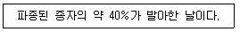
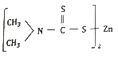
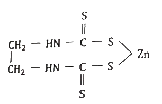
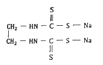
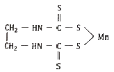

식물보호기사 (2020-06-06 기출문제)
1과목: 식물병리학
1. 식물병의 표징을 볼 수 없는 병은?
- 진균에 의한 병
- 세균에 의한 병
- 바이러스에 의한 병
- 담자균에 의한 병
(정답률: 85%)

2. 모과나무 잎에 갈색 별무늬 모양의 원형반점이 나타나고 잎 뒷면 병반에 실 같은 털이 나오는 병은?
- 모과나무 탄저병
- 모과나무 녹병
- 모과나무 갈반병
- 모과나무 역병
(정답률: 68%)
3. 다음 중 병원체가 비, 바람에 의해 가장 많이 옮겨지는 것은?
- 오동나무빗자루병
- 콩모자이크병
- 벼줄무늬잎마름병
- 사과탄저병
(정답률: 67%)
4. 국내 파이토플라스마의 전염방법으로 가장 옳은 것은?
- 월동 후 토양전염을 한다.
- 즙액전염을 한다.
- 바람에 의해 매개된다.
- 곤충에 의해 전염된다.
(정답률: 82%)
5. 다음 중 비전염성인 병은?
- 선충에 의한 병
- 세균에 의한 병
- 바이러스에 의한 병
- 무기원소 결핍에 의한 병
(정답률: 88%)
6. 종자전염성 병원균으로 가장 적절하지 않은 것은?
- 오이 흰비단병균
- 맥류 맥각병균
- 벼 키다리병균
- 벼 도열병균
(정답률: 50%)
7. 사과나무붉은별무늬병균은 진균 중 어느 균류에 속하는가?
- 불완전균류
- 자낭균류
- 접합균류
- 담자균류
(정답률: 67%)
8. 호박의 흰가루병을 방제하기 위해서는 어느 부위에 약제를 처리하는 것이 가장 효과적인가?
- 뿌리
- 토양
- 잎과 줄기
- 종자
(정답률: 83%)
9. 다음 중 꽃감염(花器感染)을 하는 것으로 가장 적절한 것은?
- 감자 암종병
- 보리 겉깜부기병
- 벚나무 빗자루병
- 고추 탄저병
(정답률: 61%)
10. 가지과 풋마름병(청고병)의 병징에 대한 설명으로 가장 적절한 것은?
- 매우 느리게 주위의 다른 포기로 병이 전파된다.
- 뿌리는 갈변되지 않는다.
- 잎에 무수히 많은 반점이 생긴다.
- 경엽 전체가 녹색으로 시드는 경우도 있다.
(정답률: 75%)
11. 벼 줄무늬잎마름병(호엽고병)의 방제방법으로 가장 적절한 것은?
- 토양소독
- 매개충의 구제
- 검역
- 발병 후 살균제 살포
(정답률: 74%)
12. 감자 잎말림병을 일으키는 병원체로 적절한 것은?
- 바이러스
- 세균
- 진균(곰팡이)
- 선충
(정답률: 49%)
13. 어떤 식물병에 대하여 저항성이었던 품종이 갑자기 해당 식물병에 감수성이 되는 주된 원인은?
- 기상 환경의 변화
- 병원균 집단의 변화
- 식물체 내 영양성분의 변화
- 식물병 저항성 인자의 변화
(정답률: 73%)
14. 벼 잎집얼룩병(잎집무늬마름병)의 표징으로 가장 적절한 것은?
- 자낭반
- 균사속
- 포자퇴
- 균핵
(정답률: 59%)
15. 잣나무 잎떨림병균의 월동 장소로 가장 적절한 것은?
- 땅위에 떨어진 병든 잎
- 토양 속
- 나뭇가지에 붙어 있는 병든 잎
- 땅위에 떨어진 열매
(정답률: 64%)
16. 벼를 기주로 하여 곰팡이에 의해 발병하는 것은?
- 오갈병
- 도열병
- 흰잎마름병
- 줄무늬잎마름병
(정답률: 55%)
17. 벼 도열병 방제법으로 가장 적절하지 않은 것은?
- 종자소독을 한다.
- 저항성 품종을 심는다.
- 질소비료의 과용을 피한다.
- 가급적 찬물을 대준다.
(정답률: 81%)
18. 다음 중 벼의 병에서 물에 의해 가장 많이 전파되는 것은?
- 흰잎마름병
- 키다리병
- 키아즈마병
- 오갈병
(정답률: 65%)
19. 병든 부분에 나타난 자낭각을 보고 진단할 수 있는 식물병으로 가장 적절한 것은?
- 옥수수 깜부기병
- 밀 줄기녹병
- 고추 역병
- 보리 붉은곰팡이병
(정답률: 54%)
20. 인삼 또는 당근의 뿌리에 혹과 같은 병징을 일으키는 대표적인 것은?
- 뿌리혹박테리아
- 뿌리혹선충
- 노균병균
- 아조토박터
(정답률: 79%)
2과목: 농림해충학
21. 곤충 개체간의 통신수단에 사용되는 물질로 가장 거리가 먼 것은?
- hormone
- pheromone
- allomone
- kairomone
(정답률: 73%)
22. 다음 중 성충의 피해가 문제되는 것은?(문제 오류로 가답안 발표시 1번으로 발표되었지만 최종정답 발표시 1, 2번이 정답 처리 되었습니다. 여기서는 가답안인 1번을 누르면 정답 처리 됩니다.)
- 소나무좀
- 뽕나무하늘소
- 밤나무순혹벌
- 솔나방
(정답률: 79%)
23. 날개가 있는 것은 날개맥이 없는 가늘고 긴 날개를 가지고 있고 그 가장자리에 긴털이 규칙적으로 나 있으며 좌우대칭이 아닌 입틀을 가지고 있는 곤충군은?
- 총채벌레목
- 나비목
- 노린재목
- 매미목
(정답률: 79%)
24. 다음 중 수간에 황색털로 덮혀 있는 난괴(알덩어리)는 어떤 해충의 난괴인가?
- 미국흰불나방
- 천막벌레나방
- 매미나방
- 복숭아유리나방
(정답률: 46%)
25. 복숭아혹진딧물의 학명은?
- Myzus presicae Sulzer
- Green peach aphid
- Tetranychus urticae Koch
- Panonychus citi McGregor
(정답률: 51%)
26. 다음 중 씹는 형의 입틀을 갖지 않는 곤충으로 가장 적절한 것은?
- 이질바퀴
- 꽃노랑총채벌레
- 벼메뚜기
- 장수풍뎅이
(정답률: 67%)
27. 다음 중 곤충의 방어물질에 대한 설명으로 가장 거리가 먼 것은?
- 곤충의 방어물질을 총칭 카이로몬이라고 한다.
- 사회성 곤충에서는 독샘에서 분비하는 방어물질들이 대부분 효소들이다.
- 곤충의 방어샘에서 동정된 화합물로는 알칼로이드, 테르페노이드, 퀴논, 페놀 등이 있다.
- 비사회성 곤충에서는 방어물질 중에 개미들의 경보 페로몬과 같거나 비슷한 구조의 화합물도 있다.
(정답률: 68%)
28. 다음 중 곤충강으로 분류되지 않는 것은?
- 먹줄왕잠자리
- 벼물바구미
- 꿀벌
- 지네
(정답률: 79%)
29. 곤충의 번성원인에 대한 설명으로 가장 옳은 것은?
- 세대가 길고 산란수가 많다.
- 변태시 적에게 쉽게 노출된다.
- 불리한 환경에 적응하기 위해 휴면을 한다.
- 행동이 민첩하고 농약에 강하여 생존율이 높다.
(정답률: 74%)
30. 다음 중 충영을 형성하는 해충으로 가장 적절한 것은?
- 솔잎혹파리
- 독나방
- 어스렝이나방
- 참나무겨울가지나방
(정답률: 68%)
31. 곤충의 알라타체에서 분비되는 호르몬은?
- 유약호르몬
- 뇌호르몬
- 카디아카체
- 탈피호르몬
(정답률: 76%)
32. 다음 중 번데기 또는 마지막 영기의 약충이 탈피하여 성충이 되는 현상을 무엇이라고 하는가?
- 우화
- 부화
- 용화
- 세대
(정답률: 79%)
33. 곤충의 뇌는 전대뇌, 중대뇌, 후대뇌로 3개의 신경절로 되어 있다. 후대뇌의 역할로 가장 옳은 것은?
- 시감각에 관여
- 청감각에 관여
- 소화기 운동에 관여
- 촉감각에 관여
(정답률: 60%)
34. 곤충의 중장과 후장 사이에 분포하여 배설작용을 하는 기관은?
- 타액선
- 말피기씨관
- 직장
- 소장
(정답률: 82%)
35. 다음 중 수목의 수피 속 형성층이나 목질부를 가해하는 해충으로 가장 적절하지 않은 것은?
- 향나무하늘소
- 회양목명나방
- 소나무좀
- 박쥐나방
(정답률: 43%)
36. 곤충이 탈피할 때 새로운 표피로 대체(代替)되지 않는 기관은?
- 식도
- 전소장
- 직장
- 맹장
(정답률: 61%)
37. 다음 중 나비목 유충이 견사(絹絲)를 분비하는 곳으로 가장 적절한 것은?
- 전위
- 맹장
- 침샘
- 말피기씨관
(정답률: 60%)
38. 큰턱샘이 분비하는 물질로 가장 적절하지 않은 것은?
- 소화효소
- 경보페로몬
- 혈액응고 억제제
- 성페로몬
(정답률: 57%)
39. 곤충의 날개는 대개 2쌍이 있다. 앞날개는 일반적으로 어디에 달려있는가?
- 앞가슴
- 가운데 가슴
- 뒷가슴
- 촉각
(정답률: 77%)
40. 다음 중 성충이 우화하여 공중으로 날면서 알을 떨어뜨리는 해충으로 가장 적절한 것은?
- 짚시나방
- 텐트나방
- 흰불나방
- 박쥐나방
(정답률: 61%)
3과목: 재배학원론
41. 다음 중 작물의 생리작용을 위한 주요온도에서 최적 온도가 가장 낮은 것은?
- 오이
- 보리
- 삼
- 벼
(정답률: 61%)
42. 단일식물로만 나열한 것은?
- 양귀비, 양파
- 티머시, 감자
- 시금치, 상추
- 코스모스, 벼
(정답률: 53%)
43. 논토양의 환원상태에서 원소별 존재형태를 바르게 나타낸 것은?
- C→CO2
- N→NO3
- Fe→Fe+2
- S→SO4-2
(정답률: 59%)
44. 저장 중 곡물의 변화에 대한 설명으로 틀린 것은?
- 호흡소모로 중량감소가 일어난다.
- 발아율이 저하된다.
- 환원당 함량이 증가한다.
- 유리지방산이 감소한다.
(정답률: 55%)
45. 다음 중 협채류에 속하는 작물은?
- 동부
- 토란
- 우엉
- 미나리
(정답률: 54%)
46. 작물의 광합성에 가장 효과적인 광은?
- 녹색광
- 황색광
- 주황색광
- 적색광
(정답률: 80%)
47. 사탕무의 속썩음병, 순무의 갈색속썩음병, 담배의 끝마름병 등과 관련 있는 필수원소는?
- 망간
- 붕소
- 아연
- 몰리브덴
(정답률: 78%)
48. 눈이 트려고 할 때 필요하지 않은 눈을 손끝으로 따주는 것은?
- 적아
- 적엽
- 절상
- 휘기
(정답률: 78%)
49. 다음 중 배의 미숙에 의한 휴면 현상이 나타나는 작물로 가장 옳은 것은?
- 자운영
- 인삼
- 귀리
- 보리
(정답률: 50%)
50. 자가불화합성을 이용하는 작물로만 나열된 것은?
- 벼, 고추
- 밀, 옥수수
- 배추, 무
- 감자, 상추
(정답률: 56%)
51. 포장동화능력에 대한 설명으로 옳은 것은?
- 총엽면적×수광능률×군락상태
- 총엽면적×수광능률×평균동화능력
- 총엽면적×광 차광률×상대습도
- 단위 엽면적×수분 포화율×평균동화능력
(정답률: 75%)
52. 다음에서 설명하는 것은?

- 발아기
- 발아시
- 발아전
- 발아 양부
(정답률: 70%)
53. 춘화처리의 농업적 이용관 가장 거리가 먼 것은?
- 대파 할 수 있다.
- 성전환이 가능하다.
- 채종에 이용될 수 있다.
- 촉성재배가 가능하다.
(정답률: 74%)
54. 관개방법 중 등고선에 따라 수로를 내고, 임의의 장소로부터 월류하도록 하는 것은?
- 보더관개
- 일류관개
- 수반관개
- 살수관개
(정답률: 65%)
55. 작물의 유전변이에 대한 설명으로 옳은 것은?
- 환경변이는 다음 세대에 유전한다.
- 연속변이를 하는 형질을 질적 형질이라고 한다.
- 불연속변이를 하는 형질을 양적 형질이라고 한다.
- 꽃 색깔이 붉은 것과 흰 것으로 구별되는 것은 불연속변이다.
(정답률: 70%)
56. 벼 신품종 종자 증식을 위해 채종포에서 사용하는 종자는?
- 기본식물종자
- 원원종
- 원종
- 보급종
(정답률: 54%)
57. 1대 잡종품종에서 잡종강세가 가장 크게 나타나는 것은?
- 단교배 종자
- 3원교배 종자
- 복교배 종자
- 합성품종 종자
(정답률: 65%)
58. 우리나라 주요 작물의 기상상태형에서 감광형에 해당하는 것은?
- 그루조
- 조생종
- 올콩
- 여름 메밀
(정답률: 46%)
59. 고구마의 안전저장 조건에서 온도 조건으로 가장 옳은 것은?
- 쿠어링 후 13∼15℃
- 쿠어링 후 20∼25℃
- 쿠어링 후 28∼30℃
- 쿠어링 후 35∼38℃
(정답률: 65%)
60. 다음 중 단명종자로만 나열된 것은?
- 사탕무, 베치
- 수박, 나팔꽃
- 토마토, 가지
- 메밀, 기장
(정답률: 54%)
4과목: 농약학
61. 95%인 원제 2kg으로 2% 분제를 만들려할 때, 소요되는 증량제의 양(kg)은?
- 73
- 83
- 93
- 103
(정답률: 71%)
62. 카바메이트(Carbamate)계 살충제의 작용에 대한 설명 중 틀린 것은?
- 살충작용이 선택적이다.
- 인축에 대한 독성이 가장 강하다.
- 적용범위가 넓고 약해가 적다.
- 식물체에 대한 침투력이 있다.
(정답률: 67%)
63. 페녹시(Phenoxy)계로서 고농도에서는 광엽선택제초성의 제초제이지만 낮은 농도에서는 생장촉진, 도복방지 등의 효과가 있다고 알려져 있는 농약은?
- pyrethrin
- 2,4-D
- DDT
- BHC
(정답률: 69%)
64. 농약관리법령상 농약이 아닌 것은?
- 살충제
- 전착제
- 기피제
- 위생해충제
(정답률: 51%)
65. 살충제 농약의 작용점이 잘못 연결된 것은?
- 원형질독-유기수은계
- 피부독-기계유유제
- 호흡독-청산가스
- 근육독-피레스린
(정답률: 59%)
66. 급성 경구독성이 가장 강한 농약은?
- Zineb제
- Parathion제
- DDVP제
- Diazinon제
(정답률: 66%)
67. 교차저항성(cross resistance)에 대한 설명으로 옳은 것은?
- 동일한 작용기작을 가진 약제군 사이에서 그 중 1개의 약제에 저항성을 지니게 된 균은 같은 군의 다른 약제에 대해서도 저항성을 가진다.
- 작용점이 여러 개인 약제에 대하여 2가지 이상의 작용점에 저항을 획들하면 그 균은 교차저항성을 획득하였다고 한다.
- 베노밀(benomyl)과 톱신-M(Topsin-M)의 경우 화학구조가 완전히 다르기 때문에 저항성의 획득도 다른 기작을 따른다.
- 저항성균이 한 지역에 발생하여 다른 지역으로 이동되었을 때, 이동된 지역에서도 저항성을 유지하는 것을 교차저항성이라고 한다.
(정답률: 76%)
68. 기계유유제의 불포화탄화수소의 양을 표시하는 값으로 정제도(精制度)와 관계있는 물리적 성질은?
- 점조(viscosity)
- 비등점(booiling point)
- 술폰가(sulfonative value)
- 응고(coagulation)
(정답률: 51%)
69. 피리딘계(4급 암모늄계) 제초제는?
- Paraquat
- Oxadiazon
- Butachlor
- Chlornitrofen
(정답률: 55%)
70. 비중이 1.15인 이소푸로치오란 유제(50%) 100mL로 0.⑤% 살포액을 제조하는데 필요한 물의 양은 몇 L인가?
- 104.9
- 114.9
- 124.9
- 110.5
(정답률: 60%)
71. 유제, 수화제, 수용제 등의 약제 살포방법 중 별도의 공기는 주입하지 않으며 약액에 압력을 가하여 미세한 출구로 직접 분사·살포하는 방법은?
- 분무법
- 미스트법
- 스프링클러법
- 폼스프레이법
(정답률: 62%)
72. 농약의 잔류허용기준을 (MRL)을 결정하는 요소가 아닌 것은?
- 최대무작용량(NOEL)
- 안전계수
- 농약 살포 횟수
- 1일 섭취허용량(ADI)
(정답률: 68%)
73. 재배면적 10ha인 어떤 농지에서 팬티온 유제 50%fmf 1000배로 희석하여 10a당 8말의 살포량으로 방제하려고 한다. 펜티온 유제는 500mL 단위로 몇 병을 구입해야 하는가? (단, 1말은 18L이다)
- 21병
- 25병
- 29병
- 35병
(정답률: 56%)
74. 조제 직후 보르도액의 구리의 용해도가 0 에 가까울 때의 pH는?
- pH 12.4
- pH 11.3
- pH 10.4
- pH 9.3
(정답률: 56%)
75. Ziram의 구조식은?




(정답률: 63%)
76. 농약의 살포방법 중 살포액의 농도가 높고 정밀한 액적조절살포가 필요한 살포방법은?
- 분입제 살포
- 공중액제 살포
- 입제 살포
- 수면 시용
(정답률: 55%)
77. 헤테로옥신이라고도 하며 무색 바늘 모양의 결정으로 과수, 화초 등의 삽목 때 발근촉진제로 사용될 수 있는 것은?
- 포스톤
- 지베렐린
- β-인돌초산
- 카시네린
(정답률: 58%)
78. 액상시용제의 물리적 특성으로만 나열된 것은?
- 유화성과 토분성
- 수화성과 비산성
- 습전성과 현수성
- 분산성과 부착성
(정답률: 52%)
79. 약해(藥害)에 대한 설명으로 옳지 않은 것은?
- 약해란 농약에 의해서 식물의 정상적인 생육을 저해하는 것이다.
- 약해라고 해서 전부 작물의 수확에 영향을 끼치는 것은 아니고, 환경조건에 따라 회복되는 일시적 약해도 있다.
- 살충제의 약해발생은 유기인계 계통이 많다.
- 만성적인 약해는 약제를 살포한지 1주일 이내에 나타난다.
(정답률: 73%)
80. 제초제 DCMUwp(Diuron)에 대한 설명으로 틀린 것은?
- 요소계 제초제이다.
- 토양처리효과가 크다.
- 포유동물에 대한 독성은 낮다.
- 호르몬형의 접속형 제초제이다.
(정답률: 45%)
5과목: 잡초방제학
81. 잡초 종자의 휴면타파 및 발아율을 촉진시키는 생장조절 물질과 가장 거리가 먼 것은?
- 사이토카이닌
- 에틸렌
- 지베렐린
- MH
(정답률: 63%)
82. 다음 중 바랭이는 형태적 분류상 어디에 속하는가?
- 광엽 잡초
- 화본과 잡초
- 방동사니과 잡초
- 국화과 잡초
(정답률: 57%)
83. 다음 중 식물간 상호작용에서 기생에 해당하는 것으로 가장 옳은 것은?
- 콩의 뿌리혹박테리아
- 콩밭 잡초 새삼
- 나무껍질에 붙어있는 지의류
- 목초지에서 두과와 화본과 식물
(정답률: 59%)
84. 일정기간 이내에 대부분 종자가 발아를 마치는 집중발아 습성을 무엇이라고 하는가?
- 발아 준동시성
- 발아 계절성
- 발아 기회성
- 발아 내성
(정답률: 60%)
85. 다음 중 광발아 종자에서 적색광과 적외선광을 교체하여 조사하였을 때 종자가 가장 발아가 되지 않는 것은?
- 적외선광 조사→적색광 조사
- 적색광 조사→적외선광 조사
- 적색광 조사→적외선광 조사→적색광 조사
- 적외선광 조사→적외선광 조사→적색광 조사
(정답률: 59%)
86. 종자에 낙하선과 같은 긴 털을 가지거나 솜털과 같은 것으로 덮여서 바람에 잘 날리는 잡초로 가장 옳은 것은?
- 도꼬마리
- 소리쟁이
- 메귀리
- 민들레
(정답률: 77%)
87. 다음 중 논토양 표토에 주로 지하경을 형성하는 다년생 잡초로 가장 옳은 것은?
- 깨풀
- 쇠비름
- 올미
- 명아주
(정답률: 65%)
88. 멀칭용 플라스틱 필름에 대한 설명으로 가장 옳지 않은 것은?
- 흑색필름은 잡초의 발생을 줄인다.
- 녹색필름은 지온상승의 효과가 크다.
- 흑색필름은 지온이 높을 때 지온을 낮추어 준다.
- 투명필름은 잡초 발생을 크게 줄인다.
(정답률: 70%)
89. 다음 중 여름잡초로만 나열된 것은?
- 벼룩나물, 바랭이
- 피, 쇠비름
- 별꽃, 속속이풀
- 피, 냉이
(정답률: 64%)
90. 잡초의 발아습성 중 발아기회성에 대한 설명으로 가장 옳은 것은?
- 일장에 감응하여 발아하게 되는 특성
- 온도조건에 감응하여 발아하게 되는 특성
- 일정한 간격을 가지고 최고의 발아율을 나타내는 특성
- 오랜 기간에 걸쳐 지속적으로 발아하게 되는 특성
(정답률: 50%)
91. 화본과잡초와 사초과잡초의 차이점에 대한 설명으로 가장 옳은 것은?
- 화본과잡초는 줄기가 삼각형인 반면, 사초과잡초는 줄기가 둥글다.
- 화본과잡초는 속이 차 있는 반면, 사초과잡초는 속이 비어있다.
- 화본과잡초는 마디가 있는 반면, 사초과잡초는 마디가 없다.
- 화본과잡초는 엽초와 엽신이 뚜렷하지 않은 반면, 사초과잡초는 엽초와 엽신이 뚜렷하다.
(정답률: 54%)
92. 생태적 잡초방제 중 경합 특성을 이용한 방법과 가장 거리가 먼 것은?
- 작부체계 관리
- 관개수로 관리
- 육묘(이식) 재배 관리
- 재식밀도 관리
(정답률: 68%)
93. 다음 중 우리나라 과수원에서 발생하는 잡초종으로 가장 거리가 먼 것은?
- 바랭이
- 매자기
- 강아지풀
- 닭의장풀
(정답률: 52%)
94. 다음 중 작물과 잡초가 경합하고 있을 때 작물 수량 손실이 가장 높은 경우는?
- C3 작물과 C4 잡초
- C3 작물과 C3 잡초
- C4 작물과 C3 잡초
- C4 작물과 C4 잡초
(정답률: 74%)
95. 잡초의 식물학적 분류로 세분되는 순서로 가장 옳은 것은?
- 계→문→과→강→목→속→종
- 계→문→강→목→과→속→종
- 속→계→문→과→강→목→종
- 강→속→계→문→과→목→종
(정답률: 75%)
96. 잡초가 종내 변이를 일으키는 원인으로 가장 거리가 먼 것은?
- 돌연변이 발생
- 사비량의 변화
- 자연교잡
- 잡초의 생리적 형질 변화
(정답률: 72%)
97. 논에서 사초과인 올방개를 방제하기 위하여 사용하는 후기 경엽처리 제초제로 가장 적절한 것은?
- 알라클로르 입제
- 옥사디아존 유제
- 디티오피르 유제
- 벤타존 액제
(정답률: 53%)
98. 다음 중 부유성 잡초로만 나열된 것은?
- 너동방동사니, 별꽃
- 올미, 토끼풀
- 개구리밥, 부레옥잠
- 깨풀, 망초
(정답률: 81%)
99. 다음 중 암조건에서도 발아가 가장 잘 되는 것은?
- 참방동사니
- 개비름
- 독말풀
- 소리쟁이
(정답률: 52%)
100. 다음 중 화본과 잡초로 가장 옳은 것은?
- 나도겨풀
- 물달개비
- 밭뚝외풀
- 올미
(정답률: 64%)